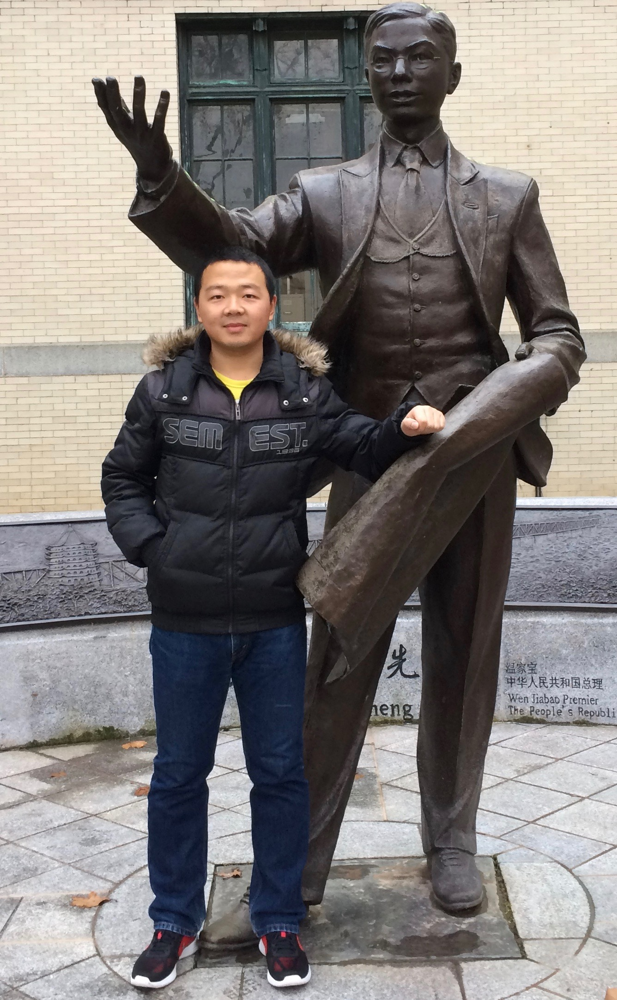

I am a Ph.D. candidate in Computer Science and Engineering department at The Ohio State University advised by professor Wei Xu. My research interests include natural language processing and machine learning. My recent works are related to large-scale paraphrase corpus construction (EMNLP 2017), deep neural networks for sentence pair modeling (NAACL 2018, COLING 2018) and text simplification (ACL 2020). Beyond NLP, I like to apply AI techniques to other fields and solve the real-life problems, e.g. travel time prediction (IJCAI 2019).
Prior to joining OSU, I received my B.E. in computer science from University of Science and Technology of China (USTC) in 2014. My undergraduate research is about facial expression recognition with deep boltzmann machine (ACII 2013). I also have experience on wireless networks and data center networks. In 2014, I interned at Microsoft Research Asia and solved incast problem in data center by developing rate shaping tool (ICNP 2014).
- A Focused Study to Compare Arabic Pre-training Models on Newswire IE Tasks
Wuwei Lan, Yang Chen, Wei Xu and Alan Ritter. arXiv preprint.
pdf code
- Neural CRF Model for Sentence Alignment in Text Simplification
Chao Jiang, Mounica Maddela, Wuwei Lan, Yang Zhong and Wei Xu. ACL 2020.
pdf BibTeX
- Travel Time Estimation without Road Networks: An Urban Morphological Layout Representation Approach
Wuwei Lan*, Yanyan Xu* and Bin Zhao. IJCAI 2019.
pdf BibTeX slides
- Neural Network Models for Paraphrase Identification, Semantic Textual Similarity, Natural Language Inference, and Question Answering
Wuwei Lan and Wei Xu. COLING 2018. Best Paper Award
pdf BibTeX code slides
- Character-based Neural Networks for Sentence Pair Modeling
Wuwei Lan and Wei Xu. NAACL 2018 (short paper).
pdf BibTeX code slides poster
- A Continuously Growing Dataset of Sentential Paraphrases
Wuwei Lan, Siyu Qiu, Hua He and Wei Xu. EMNLP 2017.
pdf BibTeX code data slides poster
- PAC: Taming TCP Incast Congestion Using Proactive ACK Control
Wei Bai, Kai Chen, Haitao Wu, Wuwei Lan and Yangming Zhao. ICNP 2014.
pdf BibTeX
- Facial Expression Recognition using Deep Boltzmann Machine from Thermal Infrared Images
Shan He, Shangfei Wang, Wuwei Lan, Huan Fu, and Qiang Ji. ACII 2013.
pdf BibTeX
Experience
- 05/2019--08/2019: Research Intern at Tencent AI Lab@Seattle
Group: Natural Language & Speech Processing
Mentor: Jia Cui
Advisor: Dong Yu
- 06/2013--01/2014: Research Intern at Microsoft Research Asia
Group: Wireless and Networking
Mentor: Haitao Wu
Teaching
Awards
- 06/2018 Best Paper Award for COLING 2018
- 05/2014 Guo Moruo Scholarship (the best scholarship of USTC, only 32 award winners)
- 07/2013 CCF Outstanding Undergraduate Award (100 award winners from TOP Chinese universities)
- 06/2013 Google Excellence Scholarship (100 award winners from TOP 20 Chinese universities)
- 09/2012 National Scholarship (2 out of 109)
- 09/2011 Outstanding Student Scholarship(Grade 1) of USTC (6 out of 109)
- 09/2010 The Cyrus Tang Moral Scholarship
Service